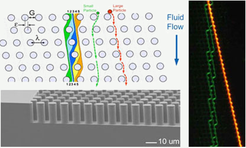
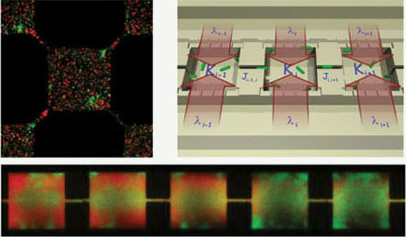
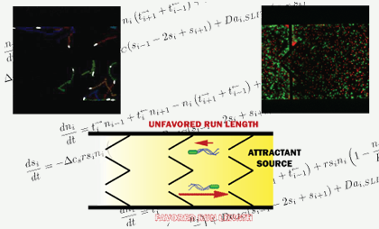
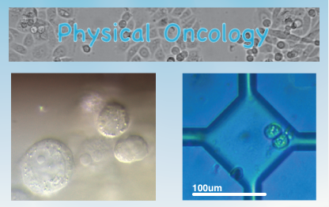
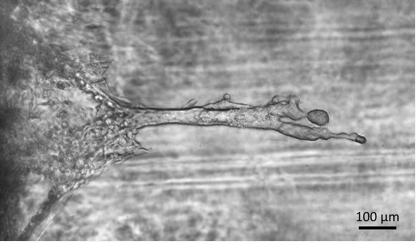
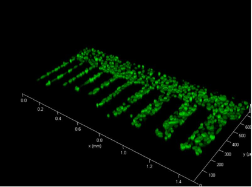

RESEARCH PROJECTS
|  |
Bump Array We use an array of posts to sort cells, bacteria, particles or any other biological materials. We present a deterministic microfluidic ratchet where the trajectory of particles in a certain size range is not reversed when the sign of the driving force is reversed. This ratcheting effect is produced by employing triangular rather than the conventionally circular posts in a post array that selectively displaces particles transported through the array. The underlying mechanism of this method is shown to to be an asymmetric fluid velocity distribution through the gap between triangular posts that results in different critical particle sizes depending on the direction of the flow. |
|  |
Evolutionary Development Microfabricated environments are used to study the evolutionary dynamics of bacteria when subjected to metabolic or physical stress. It is known that, in bacteria, genes are expressed as a response to metabolic or any external stress in order to increase their chance of survival. One such gene in E.coli is the rpoS gene; it regulates the expression of a wide variety of stress- related genes which triggers entrance into stationary phase. We use a genetically engineered rpoS mutant to study the interaction of two competing species of bacteria. |
|  |
Microscopic Swimmers The behavior of bacteria undergoing topotaxis at the microscale is studied with the help of theoretical models and custom-made microstructures. Sub-Project 1: Asymmetric funnels have been used as passive pumps to concentrate $\textit{E. coli}$ in nanofabricated devices (Austin 2007). Funnel geometry changes pump efficiency, which could be important when driving cell sorters (Whitesides 2008). The large set of funnel geometries that could be considered when designing pumps motivated us to derive a path-integral- like formula to predict the flux produced by arbitrary funnel geometries. We applied this equation to a two-dimensional wedge-shaped funnel. Model and experiment agree that the steady-state ratio between concentrations on two sides of a funnel open to $60^{\circ}$ is 3 when the aperture is one fifth the bacterial run length and 1 when the aperture is 16 times the run length, an example of how the run length here has a role loosely analogous to the wavelength in quantum mechanical path integrals. Sub-Project 2: The ballistic-like motion of self-propelled particles at low-Reynolds number can be exploited to influence their direction of motion. In particular, it has been demonstrated that by using the right topology (in this case a micro-fabricated array of funnel-like asymmetrical barriers), ${\it E.coli}$ bacteria can be ``pumped'' between two adjacent regions (Galajda 2007, Wan 2008). We built upon this idea and developed a micro-habitat array in which chemotaxis and topotaxis --nutrient- and topology-driven motion, respectively-- are in opposition, leading to an inherently unstable environment in which a bacterium is constantly pushed away from the fitness landscape's summit in a Sisyphean fashion. Surprisingly, we find that the bacterial population as a whole is able to overcome the rectifying array. An in-depth microscopic analysis of the swimmer's motion is used to quantify the strategies adopted by the bacteria. |
|  |
Physical Oncology Our aim is to study, from a physics point of view, the behavior of metastatic cancer cells in contact with normal tissues. We've recently started to study the behovior of prostate cancer cells inside microenvironments. Our aim is to be able to determine the phenotypic changes in a metastatic cancer cell that allows it to attack normal tissues. |
|
 Fig.1 MDA-MB-231 cell formed "finger" in 100% Matrigel after 2 weeks |
Reconstructing cancer cell metastasis model in in-vitro Cancer metastasis is a major reason why cancer kills: about 90% of cancer patients die of metastasis. But we know very little about this fatal process, one important reason is in real tumor tissue, invasion and metastasis occurred in too complex extracellular matrix (ECM) environment to be elucidated. By well controled chemical gradients and ECM properties, we can construct invasion microenviroment in vitro to observe and study the invasion process in real time. Picture on right is a “finger” formed when high invasive breast cancer cells (MDA-MB-231) invade in the Matrigel after weeks, this “finger” form was also indicated by computer simulation. The models are expected not only to help understand the complete process and principles of the metastasis, but also help to testify the cell metastatic potentials from clinic samples as well as help classify their molecular mechanism. |
|
 Fig.2 GFP label MDA-MB-231 cells on "cell running" track chip |
Cell collective behavior during invasion Tumor invasion and metastasis is not a single alone phenomenon. As a group, they may play games with each other and their strategy vary according to the environment changing. To study cell collective migration behavior during cancer invasion process, a “cell running track” microchip consists of parallel lanes with different width spaced by protein repellent coating (PRC, a gel can prohibit cell adherence on its surface) surface was fabricated. By long time track of individual cells movement in these different confined space, we are expecting to find competence/collaboration models of Cell. We are asking some basic but interesting questions: (1) Does the games of the cells really exist, or in another word, the cells have some kind of “intelligence”? (2) How will the cell game change with environmental conditions (resistance, chemical environment and temperature, etc), rivals’ behaviors and time? (3) Could we use and change the cells game someday as to withdraw the metastasis? Could the understanding of cell games have any clinic impact? The questions remain but are inspiring us to explore the answers. |